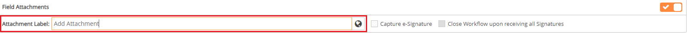
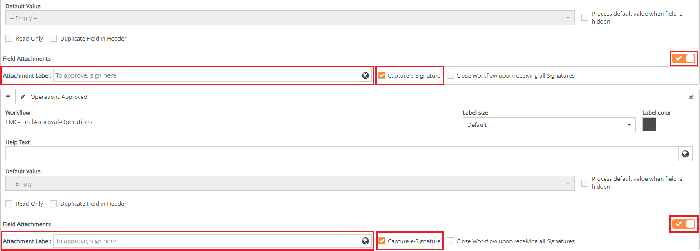

Adding Multiple E-signatures for Closing a Workflow
Some workflows require multiple e-signatures to be considered completed. To support this, the multiple e-signatures feature can be added.
To add multiple e-signatures:
From the main menu dropdown, select Designer to open Forms Designer.
To select a specific workflow step, select a Form Type, and then select the desired Workflow Step.
Click the Fields ribbon. The Fields ribbon will expand with a list of field types and two sections: Header Fields and Field Attachments
Click the + icon at the left of the desired fields to expand them.
At the right of the Field Attachmentssection, toggle on Field Attachments. The Field Attachments section will expand, displaying the Attachment Label field.
By default, the Attachment Label field value is Add Attachment. To change the value of the field, click within the Attachment Label field and type a field name.

Click the Capture e-Signature checkbox to select it.A popup will inform you that this selection will disable all field actions.
An e-signature can be applied to any Boolean field.
Click Yes. The checkbox will become selected.
Within the Field Attachments section, ensure Capture e-Signature is selected for all desired fields.

In the Field Attachmentssection, click the Close Workflow upon receiving all Signatures checkbox to select it. The check mark will populate automatically for all fields in the section that have e-signature enabled. Otherwise, the checkbox will not be selected for any of the fields in the section.